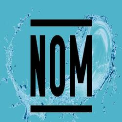

-
NOM-127-SSA1-2021
Establece los límites permisibles de calidad que debe cumplir el agua para uso y consumo humano.
-
NOM-001-SEMARNAT-2021
Establece los límites máximos permisibles de contaminantes en las descargas de aguas residuales en aguas y bienes nacionales.
-
NOM-004-SEMARNAT-2002
Lodos y biosólidos - Especificaciones y límites permisibles de contaminantes para su aprovechamiento y disposición final.